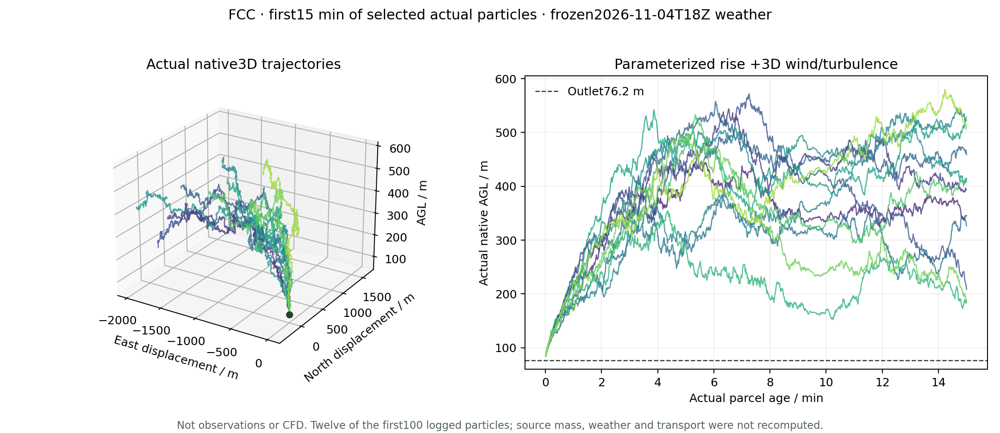

From weather and emissions to a continuous 3D source scenario.
Static report snapshot · not live telemetry
Source increments, not total ambient SO₂. Background propagation is deferred after a local particle-concentration fidelity failure. The current source calculation starts at the actual outlets, with parameterized thermal rise and 3D transport.
Actual equations, units and approximations. Historical inference is separate from the new forecast.
GFS weather→3D weather model→Reported outlets + integral thermal rise→FLEXPART transport & removal→Native queries + GPU display

Twelve actual particle identities near the FCC outlet, first 15 minutes of parcel age. These are solver positions, not a visual plume curve; the forecast itself remains continuous 360 h.
The interactive canvas follows the window and adapts render scale.
Transport follows 499,920 actual source-particle trajectories through 360 hours. Its early-age integration step is 1 s, independently of the sampling grids and 15-second viewing clock. Particle-count convergence and engineering near-nozzle point accuracy are not established.
02 / CONTINUOUS FORECAST
Fifteen days, not a repeated short plume
360 actual hourly fields
4–19 November 2026
Frozen initialization: 2026-11-04 18:00 UTC. End: 2026-11-19 18:00 UTC. All 361 weather states in both domains were validated; native transport spans 360 consecutive hours without daily resets.
GFS cycle 2026110418 supplies the entire 15-day period. The CFS extension from the former 30-day plan is not used. These are forecast conditions, not future observations.
01
9 / 3 km weather
50 layers · 18 / 6 s steps · Noah-MP
02
Continuous source transport
499,920 emitted particles · 1,800 releases
03
Interactive display
16 output layers · native F32 surface queries
What the first-release qualification means
The user-authorized criterion is per-frame RAINNC grid-RMSE≤2 mm against the same fixed CPU reference; the maximum is 1.405205 mm. It is not a per-cell maximum or validation against future rain observations. Original 1 mm failures remain preserved.
Weather uses an independent WRF-compatible JAX research implementation with documented W-boundary and cloud-freezing fixes. FLEXPART transport remains CPU-parallel. This is not an all-GPU or official NCAR GPU WRF pipeline.
Actual 360 h source mass balance · kg
Label
Emitted
Airborne
Dry
Wet
Outflow
Residual
Why does the surface often read zero?
The correct near-surface layer
The query reads the native 0–20 m layer. The current 360-hour ground chunks preserve the native F32 products; 26 independent SciPy point/time/mean/deposition controls check the query implementation. Values outside the domain remain null.
Tiny positive concentrations previously rounded to 0.000. They now use significant figures or scientific notation, such as 2.45 × 10−6 ppb. Exact model zeros are displayed as 0.
Zero is not proof of no impact
In the current selected lowland rectangle, 62.29% of area×hour source values are exactly zero. In 26.74%, the ground field is zero while a higher layer is positive. The source-only surface peak in this rectangle is 7.96435 ppb.
A zero may reflect the plume remaining aloft, removal or finite particle sampling. A nonzero 15-day mean or cumulative deposition may coexist with a zero in the selected hourly airborne field. These are native 0–20 m hourly means, not street-scale exposure measurements.
Statistics are area×hour weighted. The lowland rectangle spans longitude−123.25..−122.90, latitude 49.10..49.33, native terrain<80 m; it includes water and is not a municipal mask. Approximately 0.7×1.1 km output cells and a 0–20 m mean do not resolve breathing-height exposure. Cumulative deposition is distinct from current airborne concentration.
Background: what was excluded and why
The dated NASA GEOS-CF model initialization is traceable, not an arbitrary random pollution field. However, representing it with 350,000 weighted particles produced local near-surface spikes around 79 ppb in a city region where the mapped starting model field is approximately 1–4.2 ppb. A deterministic 1.64-million-particle candidate improved the first hour but still produced 134 ppb within 12 hours. It was stopped and preserved, not published as a corrected field.
Background propagation is deferred at the user’s request. The current animation and surface,24 h,15-day mean and deposition queries show only the three selected sources. No missing background is silently called a computed zero. These source increments cannot establish total ambient concentration or actual exposure.
Actual cumulative RAINC+RAINNC differences drive hourly precipitation glyphs. Within the stated city rectangle,133 hours contain at least one cell above 0.1 mm/h, mean cumulative water-equivalent precipitation is about 72 mm, and the maximum hourly value is 7.13 mm. Snow/ice/graupel diagnostics are retained.
Grey rain tint follows native source wet-removal increments; gaseous SO₂ is not represented as a falling solid. The visible source plume now comes from actual local 3D residence-concentration fields, driven by the same native particles as regional transport. It is no longer a camera-facing origin guide. The prescribed 3D wind varies with height; outlet momentum and heat are parameterized, with no feedback on the weather. Local/regional fields use a partition of unity, avoiding duplicated concentration. SO₂ is invisible: grey/custom colour and extinction gain are display aids.
03 / VALIDATION
Keep the failures visible
24-hour precipitation consistency
d 02 cumulative RAINNC RMSE vs fixed CPU reference · mm
Original 1 mm criterion and authorized 2 mm first-release criterion are shown separately. No grid mask or CPU reference was changed.
All five candidate branches · d 02 RAINNC RMSE / mm
All original qualification failures
Branch
Domain
Field
Hour
Value
Limit
Historical 2021 held-out results
238 reports from 5 held-out stations. Overall improvement did not satisfy the original gate because regional performance deteriorated. This historical calibration is not applied to the new annual-rate source scenario.
Stratum
Reports
Prior RMSE
Inferred RMSE
Prior MAE
Inferred MAE
Observed · dark greenAnnual prior · greyInferred · orange
Scores are ppb; per-report held-out weights are equal. The original historical success gate remains failed.
04 / VERSION CHANGES
What changed since the first version
First version
Current release
Remaining limit
Coarse terrain and industrial icons
295,252 building footprints, coloured landmarks, ground UBC crest and outer terrain
Simplified geometry; not a 1:1 Google photogrammetry model
Coarse surface / isosurface display
16 actual AGL scalar layers and freely orbiting volume rendering
Output detail does not increase the 3 km weather resolution
Historical 71.5 h plus a separate 120 s release
Actual continuous 360 h forecast mapped to 15 s, adjustable speed
15-day forecast scenario, not observations
Source origin hard to identify
Reported outlet disks, finite-density thermal rise and actual 3D near-source concentration
Parameterized entrainment and thermal rise; no resolved building/stack CFD
No weather animation
Actual forecast rain/snow and wet-removal glyphs
Symbolic drops are not tracked dissolved-SO₂ trajectories
Fixed 3-decimal query readout
Positive values retain significant figures;24 h/15-day means and source deposition
Native Monte Carlo zeros are not evidence of clean ambient air
Dense overlays and repeated city passes
Settings panel, clean canvas, one city pass and adaptive volume rendering
Default 15-second playback; actual frame rate depends on the device
MIXINGRATIO numeric molar ppt /1000 → ppb. CONC ng/m³ /1000 → µg/m³. Cumulative deposition ng/m² /10¹² → kg/m²; never sum cumulative snapshots. Raw archived report text is preserved for provenance; interface and documentation are in English.